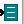

Logic peut commander une vraie Arduino Uno (ou Nano) par le câble USB. Un vrai bouton-poussoir sur
la carte commande alors un circuit dans Logic, et Logic allume une vraie LED sur la carte. Vous construisez d’abord
un circuit à l’écran, puis vous le voyez fonctionner pour de vrai.
De quoi avez-vous besoin ?
Une Arduino Uno ou Nano (ou un clone) avec un câble USB, une plaque d’essai, quelques LED, des
résistances de 220 Ω et des boutons-poussoirs. Un kit de démarrage contient tout cela.
L’Arduino IDE gratuit, pour charger une fois le programme StandardFirmata sur la carte :
Fichier › Exemples › Firmata › StandardFirmata, puis Téléverser. Logic parle à la
carte dans la langue de Firmata ; ensuite, vous n’avez plus besoin de l’Arduino IDE.
Les clones bon marché utilisent souvent une puce CH340 pour l’USB. Windows installe en général le pilote
lui-même ; sinon, vous le trouvez avec l’Arduino IDE.
Les deux composants
Bouton
Nom
Qu’est-ce que c’est ?

Entrée Arduino
Un
bouton-poussoir à deux bornes dans le circuit, comme le bouton-poussoir ordinaire. Il est fermé tant que le
vrai bouton sur la carte est enfoncé. Branchez le bouton entre la broche (D2 par défaut) et GND ;
pas besoin de résistance, Logic active le pull-up interne de la broche. Sans carte, vous appuyez dessus avec la souris.
Sortie Arduino
Une
lampe de 5 V à deux bornes. Quand elle brille (p. ex. à la sortie
d’une porte), Logic met la vraie broche à l’état haut (5 V), sinon bas. Branchez sur la
broche (D13 par défaut) une LED avec une résistance de 220 Ω vers GND. D13 a aussi une petite LED sur la carte.
Avec clic droit › Broche de l’Arduino, vous choisissez une autre broche : D2 à D13 (et pour
une entrée aussi A0 à A5). Les deux composants comptent dans la table de vérité.
Les deux boutons manquent ? Ils se trouvent dans la barre des composants à partir du niveauAvancé : choisissez Choix du panneau › Niveau.
Connecter
Branchez la carte sur un port USB.
Dans la barre du haut, cliquez sur Carte Arduino (à gauche de la loupe).
Choisissez le port (p. ex. COM3, sous Linux /dev/ttyACM0) et cliquez sur Connecter. La carte redémarre
un instant ; après deux secondes, on lit Connecté ... (Firmata 2.5).
Lancez la simulation et appuyez sur le vrai bouton.
La porte NON de la leçon 3, maintenant avec un vrai bouton-poussoir sur D2 et la
LED sur D13 : tant que vous n’appuyez pas, la LED de la carte brille.
Attention : une broche donne au plus environ 20 mA. Une LED avec une
résistance convient ; commandez une lampe, un moteur ou un relais par un transistor ou un module relais (voir la
leçon 42). Ne branchez jamais du 230 V sur la carte.
Un vrai servo
Un servomoteur sur le panneau peut faire tourner un vrai servo. Clic droit sur le servo, choisissez Vrai servo sur la carte Arduino et une broche (par ex. D9). Branchez le servo ainsi : brun ou noir sur GND, rouge sur 5V, orange ou jaune sur la broche choisie. Logic met cette broche en mode servo et envoie l’angle du bras à l’écran. Voir la leçon 44.
Un petit servo (comme le SG90 d’un kit de démarrage) peut utiliser le 5V de la carte. Un servo plus gros reçoit sa propre alimentation ; reliez alors le GND de cette alimentation au GND de la carte.
Ça ne marche pas ?
Aucun port trouvé : rebranchez la carte et cliquez sur Chercher les ports. Sous Windows, regardez
dans le Gestionnaire de périphériques › Ports (COM et LPT).
Impossible d’ouvrir le port : fermez l’Arduino IDE (ou le moniteur série) ; un seul
programme à la fois peut utiliser le port.
La carte ne répond pas : chargez (à nouveau) StandardFirmata.
 Une vraie carte Arduino
Une vraie carte Arduino